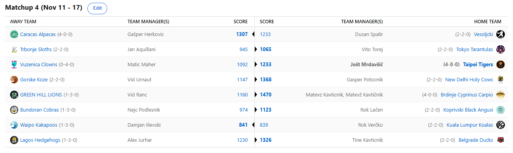

SEZONA 24/25
- Pravila in sistem tekmovanja
- Matchup1 (Oct 22 - Oct 27)
- Matchup2 (Oct 28 - Nov 3)
- Matchup3 (Nov 4 - Nov 10)
- Matchup4 (Nov 11 - Nov 17)
- Matchup5 (Nov 18 - Nov 24)
- Matchup6 (Nov 25 - Dec 1)
- Matchup7 (Dec 2 - Dec 8)
- Matchup8 (Dec 9 - Dec 15)
- Matchup9 (Dec 16 - Dec 22)
- Matchup10 (Dec 23 - Jan 29)
- Matchup11 (Dec 30 - Jan 5)
- Matchup12 (Jan 6 - Jan 12)
- Matchup13 (Jan 13 - Jan 19)
- Matchup14 (Jan 20 - Feb 26)
- Matchup15 (Jan 27 - Feb 2)
- Play-in (Feb 3 - Feb 23)
- Playoff 1 (Feb 24 - Mar 9)
- Playoff 2 (Mar 10 - Mar 23)
- Playoff 3 (Mar 24 - Apr 6)
2024/25 - Fantasy Koroška - sezona 8
MATCHUP 4 (Nov 11 - Nov 17)
Poročilo kroga
Uf kako pestro ponedeljkovo jutro je za nami … Prvič v zgodovini smo bili priča spremembi končnega rezultata zaradi naknadnega stat correctiona s strani ESPN-a.
Malokdo je sploh vedel, da so stat correctioni ob ponedeljkih a thing ampak zdaj mislim, da smo s tem seznanjeni vsi.
Kdo je nastradal? Kualalumpurške Koale so bile opeharjene zmage na najbolj krut možen način. Nekdo na ESPN-u, ki mu je izgleda prav tako šlo za zmago v matchupu si
je namislil dodati blokado komu drugemu kot Draymondu Greenu … in to za tekmo, ki je bila odigrana že v petek. Saj ni res pa je!
Verčko, čigar zmagoslavni gif se je postaral slabše kot nepasterizirano mleko, je s tem boleče izgubil še svoj drugi match zapored.
Kot da rojstvo Baby Jokiča, zaradi česar je bil Nikola še triinpetdeseti player, ki za Roka ni bil na razpolago v tem matchupu ni bilo dovolj!
Seveda se podarjenemu konju ne gleda v zobe in Dili bo tole zmago (krstno v ligi) sprejel z odprtimi rokami. Imajo licencirani tehnični komisarji tako dolge lovke,
da segajo vse do San Francisca?
V tednu, ko je bilo na marketu porabljenih skupno 197 dolarjev, je ponovno blestel Rok Lačen.
Po pičlih 4 tednih je že porabil 150 fičnikov in komaj smo mu razložili, da obstaja tudi minimalni offer, ki se ga tu pa tam lahko posluži.
Je morda Voki zmenjen, da mu Sweet Bonanza 1000 izplačuje sredstva na ESPN in ga zato ne skrbi preveč? Kakorkoli, izgleda vsaj denarja ni zmetal skozi okno,
njegovi Angusi so v dobrem momentumu in z drugo zaporedno zmago se je zdaj zacementiral v sredini razpredelnice.
Še vedno pa vztraja brez zamenjav aktualni prvak Nejc. Lanske smrtonosne Kobre so vsekakor, kot smo že napovedali,
letos bolj nenevarne belouške in čakamo na odzive strokovnega štaba. Je res samo vprašanje časa, kdaj si Embiid na svoja, že tako ali tako jedva uporabna
kolena oprta še celotno franšizo, ali pa vendarle letošnja ekipca ni zmožna obraniti naslova?
Ko smo že ravno pri washed fantasy managerjih se dotaknimo še Aleksa. Nov poraz nekdaj strahospoštovane franšize iz jugozahodnega dela Nigerije
je vsekakor razlog za preplah. Iz zanesljivih virov smo izvedeli, da so se že oglasili alarmi in da Aleks pospešeno išče rešitve.
No, je pa vsaj zmeda z enim izmed matchupov Aleksa dvignila iz rdeče cone pri predictionih, da je zabeležil vsaj eno malo zmago, če že tiste v fantasyju ne more.
Ko te premagajo Beograjske Račke je vsekakor nekaj hudo narobe. Ali pa je morda mladi Tine našel zmagoviti recept, ki ga kot kaže preizkuša tudi v 3.SKL,
kjer je končno uspel priti do zmage?
Kar tri ekipe še ostajajo v igri za rekord iz lanske sezone – 7 zmag na uvodu. Ena izmed teh je tudi posranejši izmed bratov Tatičnik, Matevž.
Vse mu gre kot po maslu zaenkrat, v tem tednu mu je uspel tudi najboljši trenutni weekly score (1470) s katerim zdaj drži denarno nagrado.
Žal se bo gobec sukal še vsaj en teden, čaka ga namreč walkover proti papirnatemu favoritu za novo, rekordno 4. gajbo. Klovnom.
No če omenimo še njegovega prejšnjega nasprotnika … vzdevek Tata Ranac bo šel v pozabo hitreje kot fight med Paulom in Tysonom.
Enostavno je bil accurate za natanko par dni, ko je Vid kraljeval na obeh lestvicah, s svojimi Levčki je izgledal zaštrašujoče, zdaj pa se tista kategorizacija »zveri« zanje
enostavno zdi zgrešena. Dissati napačno moštvo pač prinaša posledice in saj veste, kdor visoko leta … ima lep razgled.
Drugi izmed neporaženih je Herko. Alpake so, v sicer enem izmed bolj zanimivih obračunov tedna, uspešno obranile vse napade izven zemeljskih bitij in
zabeležile še 4. zmago. Kako pomembno je uspešno upravljati s FA marketom je pokazal Gašper v tem tednu in s tem svojo kakovost kot manager,
Knecht in Filipowski sta sicer veljala za dva odpisana švaserčka, a tokrat sta prevesila tehtnico v korist Alpak. Dušan,
ki je vse svoje fighterske apetite izgleda potešil v petek ponoči v kleti, pa je moral priznati premoč superiornemu strategu in takorekoč
brez boja zabeležil nov poraz. Vsaj ni šlo za blowout v slogu Jezernikov i guess.
Zadnji izmed neporaženih pa je tudi trenutni rekorder iz lanske sezone, ko ga je šele v 8. tednu uspel zaustaviti Urnaut.
Jole s svojimi Tigri se tokrat ni pretirano namučil. Kaj takega smo seveda pričakovali že v štartu, obračun s Klovni namreč
že dolga leta velja za lažjega kot sprehod v parku in tudi tokrat ni bilo nič drugače. Celo Wemby si je vzel dan dopusta
in se rehabilitiral za naslednje, težje dvoboje. Na drugi strani se poraja vprašanje, ali je Matic izkoristil pred menjavo
službe še vse svoje ugodnosti in kar na zalogo vzel plato piva, vedoč, da ga v aprilu čaka tradicionalna dolžnost?
Je lahko Matic tokrat tisti, ki s trejdom odloči ligo, toda ne v prid tistega s katerim trejda temveč sebe? Težko verjeti,
ampak dajmo fantu priložnost, da svoje Klovne popelje iz tega cirkusa in se vendarle znajde končno nekje drugje kot pa na zadnjem mestu razpredelnice.
Zgolj trije so se okitili s prediction pointsi ob zmagi g. Gepsa proti favoriziranim Kozam.
Boljša farmna žival je tako izbrana in kravje mleko > kozje mleko confirmed.
Tisti petkov video je tako izvrstno opisal trenutno stanje v franšizi Koz, kjer se trenutno ne cedita med in mleko.
Bo Vid zbobnal ponovno Kavta in Joleta na kakšno malico in ju prosil za nasvete? G$PS, ki je tokrat nekarakteristično malo trošil na trgu je zabeležil
še drugo zmago in se zdaj nahaja na šestem mestu. Je to najvišja uvrstitev, ki jo je v dolgoletnem sodelovanju v tej ligi sploh imel?
Tega podatka v uredništvu nimamo, morda nam lahko z njim postreže kar Gašper sam, bi mu pa privoščili končno en deep playoff run, a samo v primeru če
da za pivo Diliju, ki mu je ukradel Banchera … z njim v ekipi namreč tako visoko ne bi bil.
Ostal nam je le še obračun Tarantel in Slothsov. Manager prvih je ta teden vendarle zabeležil zmago po dolgih mesecih čakanja tudi IRL …
Kety Emmi Bistrica v 3.SKL in Kery Noobi Trbonje v NBAFK so bili stranke za Vita ta teden. O tem obračunu vemo povedati samo to, da sta oba pogrešala
kar precej svojih steklenkonov in da je bilo jamranja na pretek. Zakaj in kako je Tarantelam uspelo z drevesa izriniti speče Lenivce pa ostaja vprašanje
za naše analitike. S trenutnih 2-2 najbrž ni zadovoljen ne eden ne drugi, a ti sicer strah vzbujajoči franšizi imata veliko rezerve predvsem v IR-ju.
Lonzo Ball čaka na svojo priložnost in če vanj verjame Jan, verjamemo tudi mi!
5. teden prinaša veliki derbi na vrhu … Alpake in Tigri bodo obračunali med seboj kdo bo nosil breme ljudstva,
da utiša Matevža in mu prepreči prvo mesto. Se je Wemby spočil ali pa bo antipatik Booker podobno kot včeraj
(ko je bil vsaj over do povcajta in smo mu to oprostili) nosil franšizo Alpak do 5-0? Se lahko Fred in Cici rešita
avspuharskega statusa, ali pa sta Dili in Tajn na krilih prejšnih zmag previsoki oviri? Zmage Klovnov proti Krapom najbrž
ne more pričarati niti Harry Potter, nas pa zelo zanima še kako bo boleč poraz vplival na Koale. Srečno vsem, ne pozabite
na predictione in gremo gasa v peti teden!